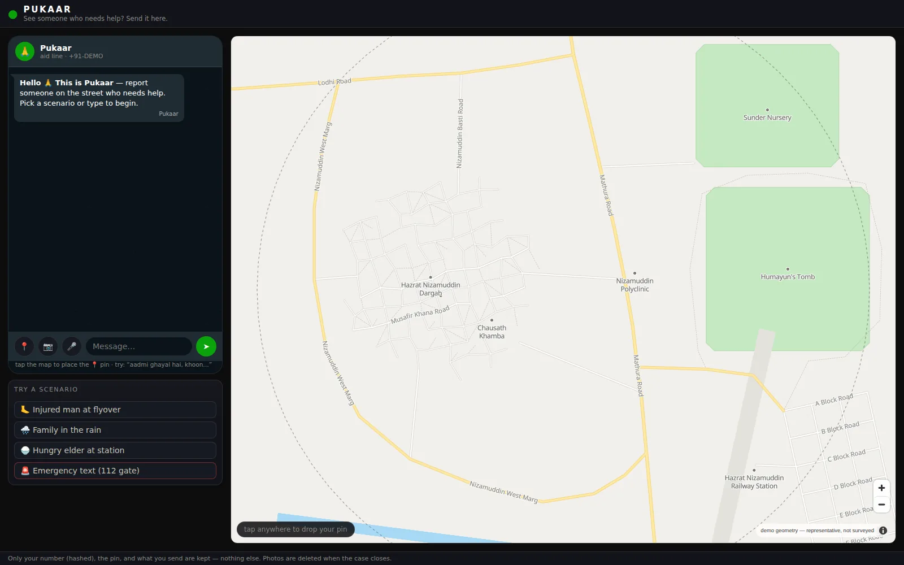
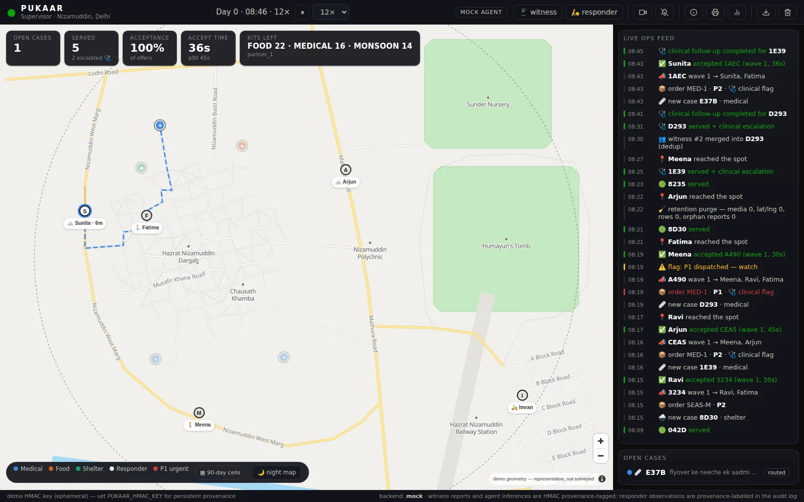
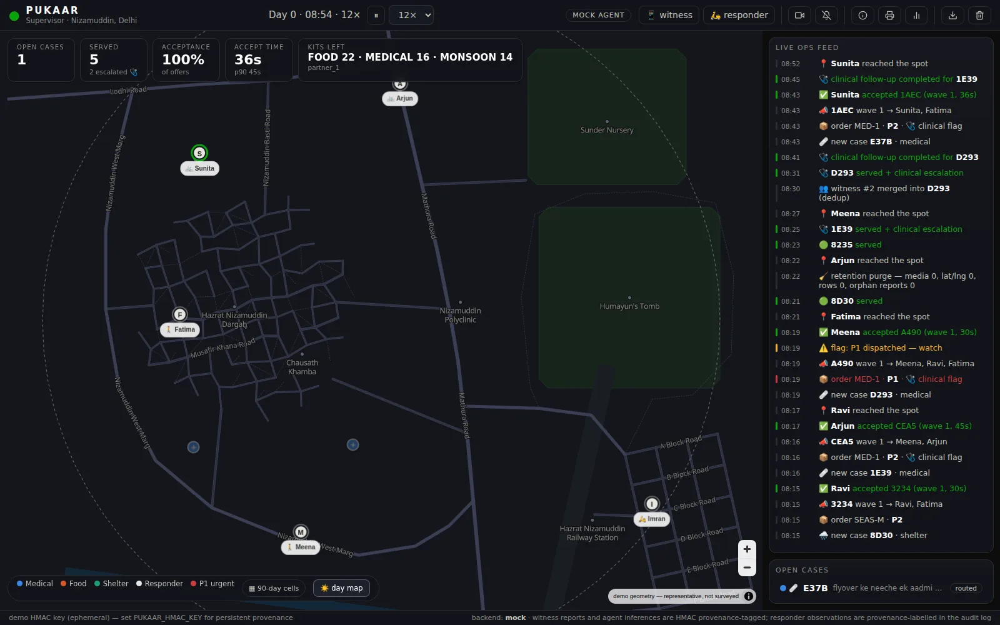

WAYSIDE
See it, send word.
One WhatsApp-style message turns anyone who stops on the street into the start of a real aid response. No app, no account — and no cameras, no database of the poor.
Three steps between noticing and help arriving.
See it
A man down under a flyover. A family out in the rain. Most people who pass want to help and do not know how. With Wayside, wanting to is enough.
Send word
Message the Wayside number the way you would message a friend: a pin and a line of text, in any language. That is the whole job. You can walk on.
Someone comes
A trained responder from a local partner is dispatched with food, medical care, or shelter — usually within minutes. When the case closes, you hear what happened.
Served, never enrolled.
No register of the poor
The people Wayside helps are never signed up, photographed for a file, or profiled. Aid should not cost a person their anonymity.
Locations do not linger
The moment a case closes, its exact location is wiped from the system. There is no map of where vulnerable people sleep.
Ninety days, then a blur
After 90 days, all that remains is a coarse heat-cell — enough to show a city where need clusters, useless for finding any one person.
Built, not imagined.



Screenshots are from the working build, which carries the development codename Pukaar — Urdu for a call for help.
Wayside works because someone answers.
We are looking for NGO and municipal partners with responders on the ground. We bring the system, the dispatch line, and the training; you bring the people who come when word is sent.
Partner with us